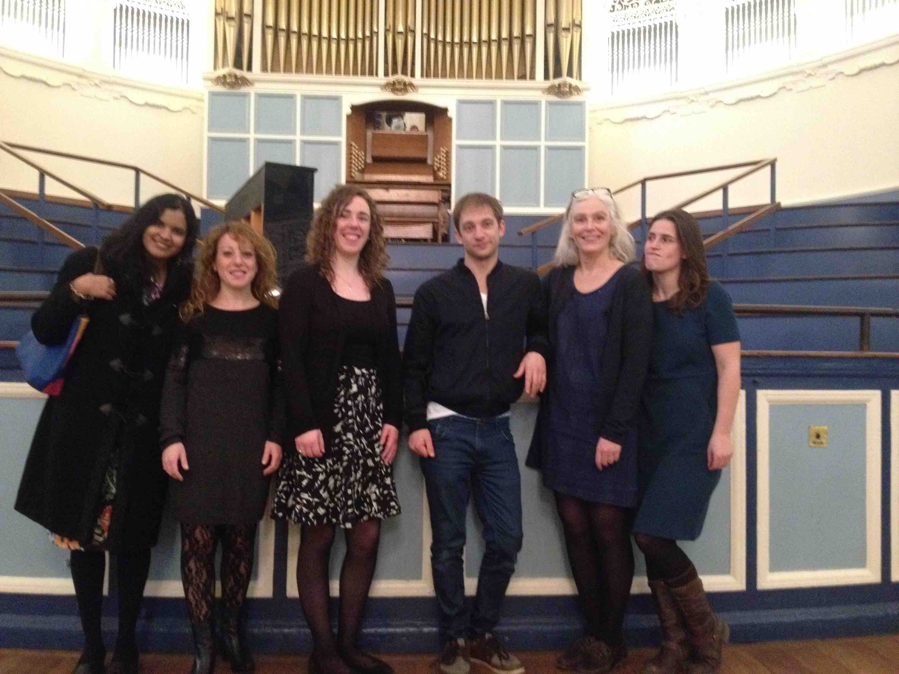

6th December, 2015
Drums look after me. What ever energy and heart I put into them, I get it all back and more. I've met so many amazingly kind and cool people through teaching, and had so many good times working with children. Now I am more mature, I can hold down a business too, and still help adult students focus minds. My most recent student, buzzing, said to me: "My mind has never been so sharp using rhythm exercises in the morning before starting to write my PhD". I think both children and adults needs more focusing in their lives. There's nothing like connecting with drums and cymbals in a room and really noticing how they sound in response to how you play them.
If someone asked me what I do, in a trusted conversations I might say: Drumming and the transmission of inner knowledge (or "TIK" as my good friend abbreviated for me. It is sharing a space I help create when drumming is the main focus of the beings in the room; I feel it amounts to the most incredible life building times I've ever witnessed and encountered. Just yesterday, I had a student who started at 7 years old with me, is now 16 and just got his distinction at Grade Eight. I have so many children come back for lessons week after week, year after year, to enjoy having a great time and learning about how they relate to their own body, mind and goals, and how that transmits as they way they drum.
"There's nothing like connecting with drums and cymbals in a room and really noticing how they sound in response to how you play them."
Improvisation is my most nourishing form of drumming.I've done some of my best drumming to a small group of kids, or just one kid sitting next to the drums I'm playing, where I had no particular thing I wanted to play, I just start to play. I question, how I would be able to play like that in a music club environment, and for some reason it feels so different. I believe play is the most important form of learning and experience of life, and my research and interests take me to scientific research and intuitive happenings into the modelling and spontaneity of lessons.
Working for the community is the most honourable job I can think of, as there's only so much of me that can work, and so many ways in which I can think of of how to do it. Today, while performing in drums for Matrix Music School at the Oxford Town Hall along side 100 kids or so on the keyboards, the aim is only one: to aid the other performers rhythm.
How do I get these jobs and why do I value them so much? How did I run a Yamaha school? How did I obtain a shopping centre premises? All by just being who I am. I share life with drums and those that feel the benefits of being around me being with them. I believe that drumming, music, and passion for improvement in all areas of life, and the state of being it creates by focusing on the rhythm, mind and body, will continue to heal.
"I believe that drumming, music, and passion for improvement in all areas of life, and the state of being it creates by focusing on the rhythm, mind and body, will continue to heal.
Finally, the story I hear in this blog as I read it back, reminds me of the imagination of story telling I heard today in the young composers piano playing at the Matrix Music Event in the town hall. The young composers would have to describe the story of the piano piece they performed, such as storms, or the flight paths of birds, to hundreds of families. The state of being is very important in experiencing what we call life.